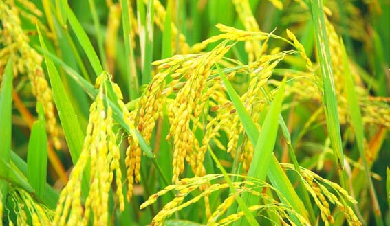

Agriculture or farming is the practice of cultivating plants and livestock.Agriculture was the key development in the rise of sedentary human civilization,whereby farming of domesticated species created food surpluses that enabled people to live in cities.The history of agriculture began thousands of years ago. After gathering wild grains beginning at least 105,000 years ago, nascent farmers began to plant them around 11,500 years ago. Pigs, sheep, and cattle were domesticated over 10,000 years ago. Plants were independently cultivated in at least 11 regions of the world. Industrial agriculture based on large-scale monoculture in the twentieth century came to dominate agricultural output, though about 2 billion people still depended on subsistence agriculture. The major agricultural products can be broadly grouped into foods, fibers, fuels, and raw materials (such as rubber). Food classes include cereals (grains), vegetables, fruits, oils, meat, milk, eggs, and fungi. Over one-third of the world's workers are employed in agriculture, second only to the service sector, although in recent decades, the global trend of a decreasing number of agricultural workers continues, especially in developing countries, where smallholding is being overtaken by industrial agriculture and mechanization that brings an enormous crop yield increase.
The word agriculture is a late Middle English adaptation of Latin agricultūra, from ager 'field' and cultūra 'cultivation' or 'growing'.While agriculture usually refers to human activities, certain species of ant,termite and beetle have been cultivating crops for up to 60 million years.Agriculture is defined with varying scopes, in its broadest sense using natural resources to "produce commodities which maintain life, including food, fiber, forest products, horticultural crops, and their related services".Thus defined, it includes arable farming, horticulture, animal husbandry and forestry, but horticulture and forestry are in practice often excluded.It may also be broadly decomposed into plant agriculture, which concerns the cultivation of useful plants,and animal agriculture, the production of agricultural animals.
It is a slash and burn agriculture. Farmers clear a patch of land and produce cereals and other food crops to sustain their family. When the soil fertility decreases, the farmers shift and clear a fresh patch of land for cultivation.
Majority of farmers in India practice subsistence farming. It is characterized by small and scattered land holdings and use of primitive tools, like hoe and digging sticks by family members. As the farmers are poor, they do not use fertilizers and high yielding variety of seeds in their fields.
Intensive farming: This is a system of farming under which small farms are cultivated intensively using large inputs of manual labour, manures and fertilizers. Usually, more than one crop is cultivated on the same field. The main crops grown are rice and wheat.
Extensive farming: This type of farming is practiced on farms of large size with the help of machines and the input of labour per unit area is low. The emphasis is laid on increased production. The main crops grown are rice, wheat, sugarcane, etc.
As per agriculture scientists, 'organic farming' is a system which largely excludes the use of synthetic inputs such as fertilizers, pesticides etc. in farming activities. They follow crop rotations, crop residues, manures, non-farm organic waste and biological system of nutrient mobilization and plant protection for better yield of crops.
Paddy also called rice paddy, small, level, flooded field used to cultivate rice in southern and eastern Asia.
Wet-rice cultivation is the most prevalent method of farming in the Far East, where it utilizes a small fraction of the total land yet feeds the majority of the rural population.

Green gram also known as moong is one of the main pulse crop of India.
It is a rich source of Protein along with fibre and iron.
It can be cultivated as Kharif as well as summer crop.
It is one of the important pulse crop grown throughout India.
Generally it is consumed in the form of ‘Dal’.
It is the chief constituent of ‘papad, idly and dosa’
For milch cattle, it is used as nutritive fodder.
It is also used as green manuring crop.
It controls soil erosion and compete with weeds effectively due to its deep root system and foliage cover.
It contains protein (25%), carbohydrates (60%), fat (1.3%) and rich in phosphoric acid
It fixes atmospheric nitrogen into soil and improve the soil fertility.
It is generally grown in kharif/rainy and summer season.
Bengal gram, closely related to the chickpea family, is a yellow lentil, rounded on one side and flat on the other.
Bengal gram is one of the earliest cultivated legumes.
In Indian cuisine, it is popularly known as Chana Dal.
Bengal gram seeds are small and dark and have a rough coat.
Cotton is one of the most important fibre and cash crop of India as well as of entire world.
It plays a dominant role in the industrial and agricultural economy of the country.
It provides the basic raw material to cotton textile industry.
In India it provides direct livelihood to 6 million farmers and about 40-50 million people are employed in cotton trade and its processing.
In India, it is grown on a large scale in Maharashtra, Gujarat, Karnataka, Madhya Pradesh, Punjab, Rajasthan, Haryana, Tamil Nadu and Uttar Pradesh.
Gujarat is the largest producer of cotton followed by Maharashtra and Punjab.
It is vital kharif crop of Punjab
Sesame is one of the oldest crops and an important oil yielding crop with oil content of 40-50% and popularly known as Til or Gingelly.
The sesame seeds powder and its oil is used in various Indian dishes as a flavoring agent.
In India the sesame crop is cultivated as kharif, summer.
Palm oil is a very productive crop. It offers a far greater yield at a lower cost of production than other vegetable oils.
Global production of and demand for palm oil is increasing rapidly.
Plantations are spreading across Asia, Africa and Latin America.